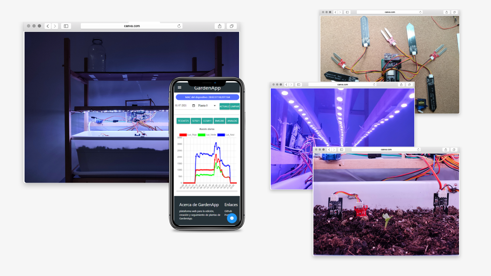

Diseño de un huerto urbano inteligente y autónomo
Este proyecto consiste en el diseño de una alternativa a los sistemas comerciales de huerto inteligente, teniendo en cuenta la escalabilidad, la personalización y el respeto con el medio ambiente.

Resumen
La metodología utilizada para este proyecto es DIY (Do It Yourself) o también conocido como hazlo tú mismo en español, busca crear productos personalizados, económicos y reparables. Esta metodología promueve el hardware y software libre al abordar el diseño del producto, por esta razón el sistema fue diseñado para ser modular tanto en software como en hardware, permitiendo adaptar el software a las limitaciones del hardware seleccionado.
El microcontrolador utilizado para este proyecto es la placa de desarrollo ESP32- DevKitC-32D de Espressif permitiendo al usuario el cuidado de un máximo de cuatro plantas. Además, proporciona información del estado actual del huerto, suministro de iluminación personalizado y riego automático por planta.
El sistema desarrollado cuenta con tres subsistemas: el huerto, el servidor central y la plataforma web. El huerto es quien se encarga físicamente del cuidado de las plantas y obtiene información individual de cada una de ellas. Dicha información es tratada por el servidor central que se encarga de procesar, estructurar y almacenar la información para que esté a disposición de la plataforma web, que es la interfaz gráfica del sistema.
La comunicación del usuario con el huerto se realiza a través de la plataforma web y se accede desde cualquier móvil con navegador web. El usuario es capaz de agregar, editar y eliminar plantas del huerto. Además, permite de manera interactiva monitorizar las variables físicas del huerto y entender de forma cuantitativa el estado del huerto.
Una vez desarrollado todo el sistema, se procedió a analizar los resultados obtenidos del prototipo durante cinco meses y se concluye que cumple con las especificaciones descritas, ya que el huerto es capaz de obtener los datos del entorno, suministrar iluminación y regar con la frecuencia fijada por el usuario. Además, proporciona al usuario una mayor información sobre el estado general e individual de las plantas, ya que ofrece históricos de los datos recopilados del huerto que ayudan de manera gráfica e intuitiva a entender el entorno en el que se encuentra y cómo puede el usuario mejorar el cuidado de las plantas.